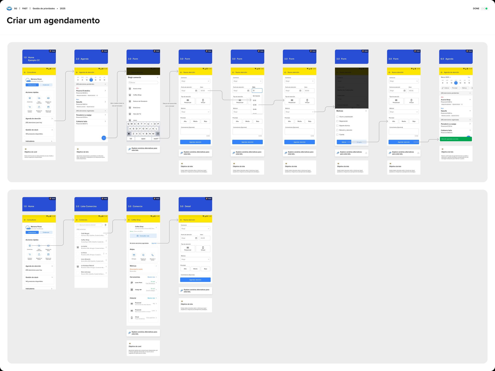
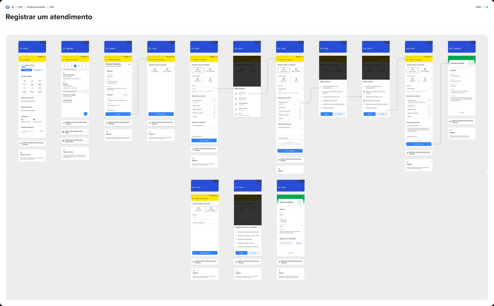

Mercado Pago · 2024–2025
Priorização de visitas comerciais
O representante recebia alertas de prioridade, mas a ferramenta não ajudava a transformar isso em um plano de visitas viável. O desafio era redesenhar esse fluxo para Brasil, México e Argentina sem fragmentar o comportamento do produto entre mercados.

Uma ferramenta no centro da operação de campo
O produto
Atuei na vertical de adquirência do Mercado Pago, em um CRM interno usado por equipes comerciais de campo para gestão de carteiras de PMEs.
O cenário
O produto cobre todo o ciclo comercial, da prospecção à manutenção da base, em um contexto com muitos clientes por região e forte pressão de execução em campo.
Meu foco
Meu foco foi a evolução da experiência de priorização de visitas, uma etapa central no planejamento diário dos representantes.
Evoluindo a experiência de prioridades do CRM
O aplicativo já exibia alertas da carteira, mas exigia navegar entre diferentes telas para relacioná-los aos estabelecimentos e compreender quais visitas precisavam acontecer naquele dia.

Da pesquisa à oportunidade de produto
Reuni os principais aprendizados do discovery em um único mapa da operação, conectando análises do produto existente, alinhamentos com áreas parceiras e conversas recorrentes com consultores comerciais. Essa síntese orientou a definição das prioridades do projeto e a evolução da experiência de gestão de visitas.
Para estruturar esse processo, usei o NotebookLM para organizar as fontes do discovery, ajudando a enquadrar melhor o problema, mapear possíveis restrições e checar o alinhamento com o PRD antes de avançar para as direções de solução.

Três propostas em baixa fidelidade
Para explorar as três direções rapidamente, combinei uma dinâmica de Crazy 8s com stakeholders e o Figma Make, transformando as ideias em protótipos reais em pouco tempo e sem comprometer o cronograma do projeto.
Mapa de visitas
- ✓ Visualiza a carteira geograficamente
- ✓ Planejamento espacial
- ✕ Alta complexidade técnica
Agenda priorizada
- ✓ Organiza o dia de trabalho
- ✓ Aproveita dados existentes
- ✓ Menor esforço de engenharia
Carteira priorizada
- ✓ Baixo custo
- ✕ Pouco ganho na organização das visitas
A nova experiência com foco na clareza
A nova interface organizou o dia do representante através de uma navegação por datas, trazendo os níveis de prioridade e os motivos das visitas direto para a tela principal de agenda. Esse desenho eliminou a necessidade de adivinhar o próximo passo ou vasculhar os perfis individuais, permitindo que o profissional entendesse o contexto e a urgência de cada comerciante antes mesmo de tocar na tela.

Refinando a experiência para lançamento
Validei o protótipo com cinco representantes comerciais para confirmar se a nova estrutura de agenda era compreendida durante o planejamento das visitas. Os testes mostraram que a navegação por datas era intuitiva, mas que ainda existia a necessidade de abrir cada cliente para entender o motivo da prioridade.
Antes da implementação, incorporei essa informação diretamente na listagem por meio de tags, reduzindo uma etapa da navegação e tornando a agenda mais escaneável para o planejamento do dia.
Usei o NotebookLM para identificar os termos que mais se repetiam nas entrevistas, palavras que pareciam refletir o modelo mental dos consultores, e o ChatGPT e Claude para transformar esses termos em variações de wording mais acessíveis para as tags, alinhadas à linguagem que eles já usavam no dia a dia.
Fluxo · criar um agendamento

Fluxo · registrar um atendimento

Mais produtividade no dia a dia e menos rotatividade na carteira
Depois do lançamento, a produtividade diária dos representantes cresceu 15% e o churn da carteira caiu 5%. Com o motivo de cada prioridade visível na agenda através das tags, o representante passou a gastar menos tempo abrindo perfil por perfil e mais tempo em campo, o que se refletiu nesses dois números. A agenda priorizada manteve um único comportamento de produto para Brasil, México e Argentina, com adaptações pontuais de conteúdo e idioma em vez de fluxos paralelos por mercado, e ganhou uma versão desktop para gestores acompanharem equipes inteiras de representantes.